Фотоальбом типографии
Работы мастерской
28 фотографий из портфолио и статей типографии. Рассмотрите переплёты целиком, сравните книги до и после ремонта или откройте крупный план тиснения.
Книги и обложки

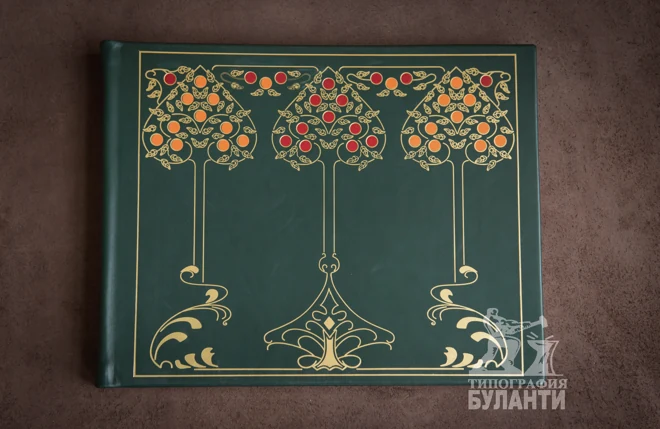
Растительный орнамент
Тонкие золотистые стебли сходятся в центре зелёной крышки.

«Арктика глазами пилотов»
Название набрано поверх панорамы, которая занимает всю обложку.

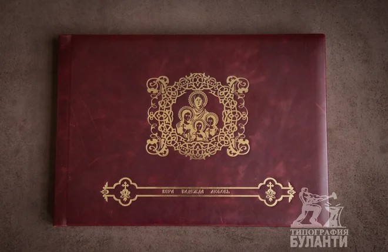
Бордовая обложка
Эмблема в центре и узкая золотистая рамка внизу.

Рисунок в тон крышки
Тёмные буквы и герб выделяются на тёплом коричневом фоне.

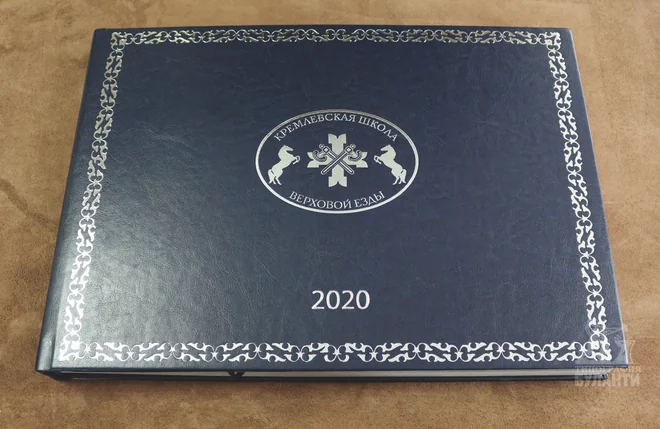
Серебристая рамка
Орнамент очерчивает край тёмной крышки, внизу стоит дата.

Confectionery Victory Book
Золотистое название и тонкая рамка на красной обложке.

Ажурная надпись
Росчерки золотистых букв заполняют малиновую крышку.

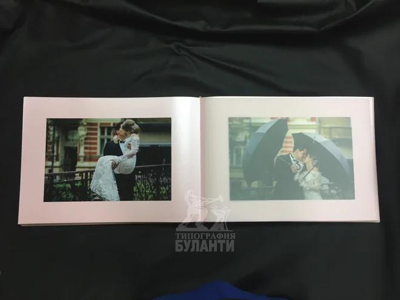
Разворот фотоальбома
Две фотографии на светлом развороте в широкой крышке.

Разворот книги
Две схемы набраны на соседних страницах раскрытой книги.
Французский переплёт

Бумага с мраморным рисунком
На зелёной книге виден переход от узорной сторонки к корешку.

«Сильна как смерть»
Кожаный корешок и уголки обрамляют узорную бумагу.

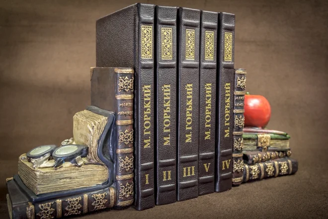
Тома одного собрания
Названия и номера томов расположены между поперечными бинтами.

Переплёт с застёжками
Две застёжки соединяют тёмные крышки книги.
Футляры и детали

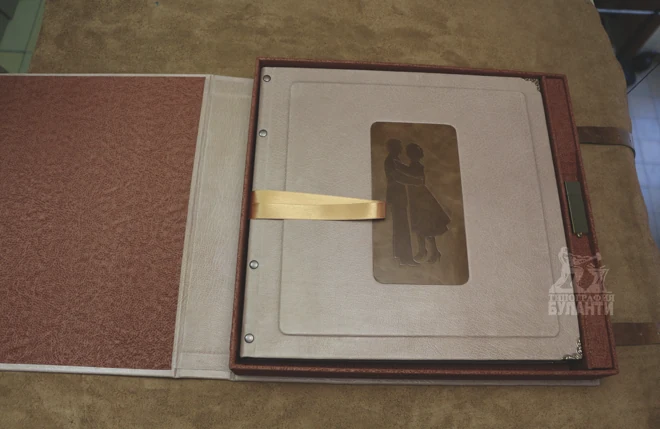
Книга в футляре
Лента помогает поднять светлую книгу из углубления в футляре.

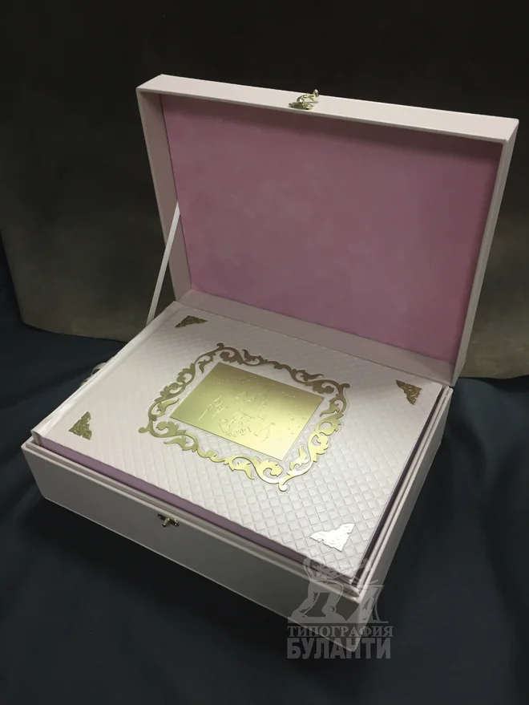
Футляр с откидной крышкой
Светлая книга лежит в раскрытом футляре с сиреневой подкладкой.

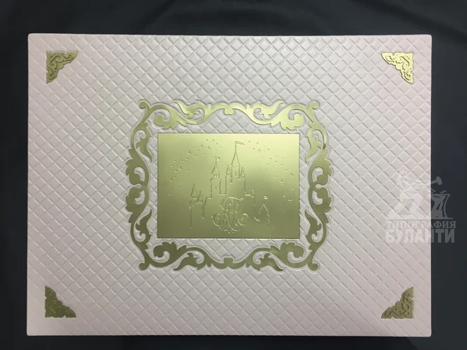
Центральная вставка
По углам светлой крышки и вокруг прямоугольной вставки проходит орнамент.

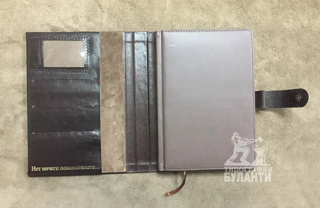
Внутри органайзера
Слева карманы для карточек, справа блок и ремешок застёжки.

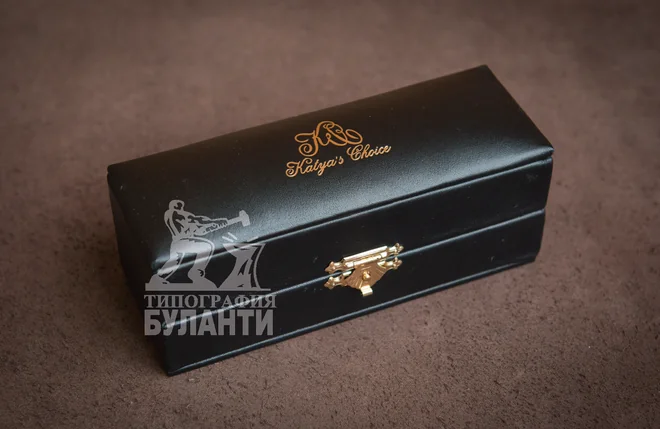
Футляр с застёжкой
На чёрной крышке видна эмблема, сбоку — металлическая застёжка.

Золотистый обрез
Между тёмными крышками видны золотистый край страниц и лента.
Клише и тиснение

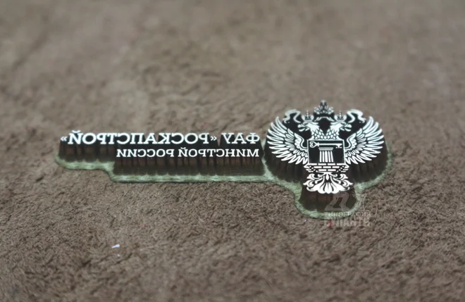
Клише с надписью
На снимке видны рельефные буквы и герб для тиснения.

Герб в металле
Контуры щита и короны вырезаны на небольшом клише.

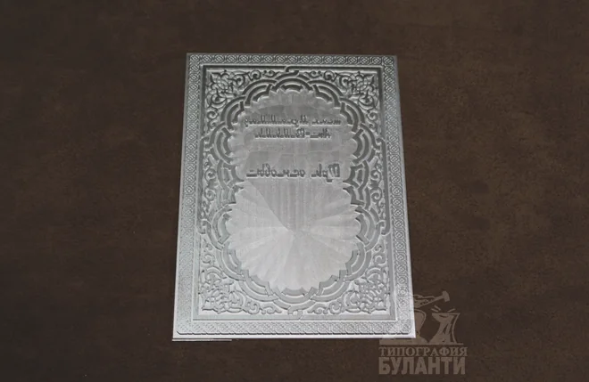
Клише для пресса
Тонкий орнамент занимает плоскость прямоугольной пластины.

Клише с рукояткой
Небольшой металлический инструмент для ручного тиснения.

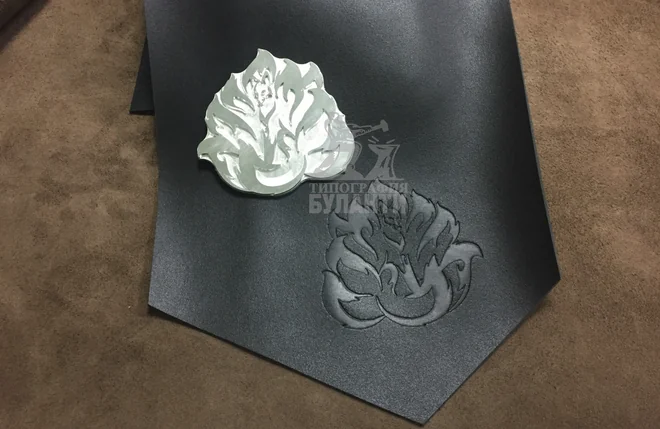
Клише и оттиск
Светлое клише лежит рядом с рельефным рисунком на тёмном материале.
До и после ремонта

«Ветка сакуры» до ремонта
На старой обложке сохранилась иллюстрация. Края потёрты, корешок повреждён.

«Ветка сакуры» после ремонта
Рядом с «Камешками на ладони» лежит книга в новой зелёной крышке с золотистым названием.

«Королева Марго» до ремонта
Старая серая обложка с потёртыми краями и названием на лицевой стороне.

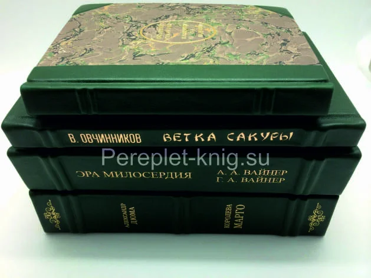
Книги после ремонта
На корешках видны названия, поперечные бинты и золотистые буквы.
Все работы и подробные описания технологий есть на сайте типографии.
Портфолио типографииВыбрать материал для книги
Сравните конструкции, материалы и стоимость переплёта.